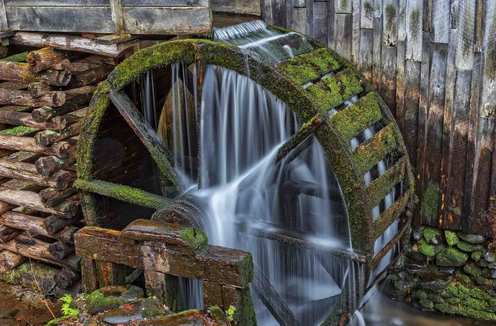

L'energia idraulica, ottenuta sfruttando il flusso dell'acqua attraverso dighe e mulini ad acqua. Gli stabilimenti cominciarono a sorgere preferibilmente in campagna, accanto a torrenti e a salti d'acqua. Non mancavano però gli inconvenienti. L'energia idraulica infatti era potente, ma non sempre disponibile, perché i torrenti potevano prosciugarsi (d'estate) o gelare (d'inverno).l'energia idraulica è caratterizzata da bassi costi di manutenzione, non produce gas serra o inquinanti atmosferici diretti. Oltre all'energia idraulica, l'uomo ha sfruttato l'energia termica proveniente dalla combustione di carbone, petrolio e gas naturale per alimentare le industrie durante la Rivoluzione Industriale. Queste fonti, sebbene abbondanti e convenienti, hanno portato a gravi problemi ambientali, compreso l'inquinamento atmosferico e il cambiamento climatico. sono emerse fonti di energia più sostenibili, L'energia nucleare, non produce gas nocivi per l'ambiente durante la produzione di elettricità. però ci sono dei rischi riguardo alla sicurezza delle centrali nucleari e alla gestione dei materiali radioattivi. Negli ultimi anni, usiamo molto le energie rinnovabili, come quella solare, eolica e geotermica. Queste fonti di energia usano risorse naturali che non si esauriscono mai e non fanno male all'ambiente. Sono una grande opportunità per ridurre l'inquinamento dell'industria e garantire che ci sarà abbastanza energia per le future generazioni. In conclusione, l'evoluzione delle fonti energetiche, dall'energia idraulica durante la Rivoluzione Industriale alle energie rinnovabili, cercando modi migliori per ottenere energia che siano più convenienti, efficienti e che non danneggino l'ambiente.